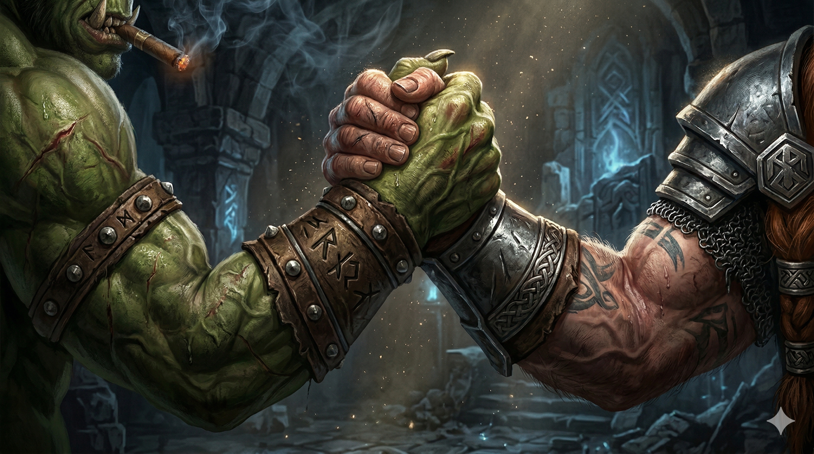

Session Seven: Altered Streams¶
Date: April 2, 2026
Overview¶
After healing up on the hillside overlooking the Gosembiki ruins, the party descended into the Five Pointed Star—a crumbling, moss-choked shrine carved with mathematical patterns and saturated with geomantic corruption. They fought through infected wolves, animated stone guardians, and corrupted leshies before descending into a subterranean chamber where they found the device Yong had been commissioned to build—a flower-petal mechanism slowly turning inside a gear track, warping the ley line beneath Willowshore several degrees counterclockwise. A spectral undead guardian nearly killed them before Boone shattered its anchor to this world, and the party now stands wounded but alive in the chamber with the vine-wrapped device at their feet.
Key Events¶
Healing and Approach¶
The party began midday, still camped on the hillside above the ruins after the werewolf fight. Treat Wounds checks went poorly for Ginkgo (failed on Boone), but Boone healed himself with Assurance, Donkey critically healed Boone (4D8), and Littlefinger patched himself up with Ginkgo's Guidance. Once restored, they descended toward the ruin.
The land around the Gosembiki grew increasingly wrong as they approached. Green grass gave way to patchy, darkened undergrowth. The earth felt damp and squishy—marshy where it should have been solid. Trees had blackened, split bark weeping dark sap. Insects buzzed with what sounded like pain rather than life. A sweet, decayed smell hung in the air—a mix of cinnamon and death.
Ginkgo felt it through his feet and soul: the land was hurting. Not dead, not blighted like poison, but wounded by something unnatural. Every step closer to the shrine intensified the feeling.
The Infected Wolves¶
Two corrupted wolves appeared—twisted, patchy-furred creatures with pustules and growths identical to the werewolf guard from the previous session. Their jaws dripped black saliva as they stalked forward.
Combat highlights:
- Ginkgo cast Sanctuary on Boone—when the surviving wolf tried to bite him, it failed its Will save and wasted its action, frozen mid-lunge like a dog hitting a shock collar
- Donkey scored a critical hit with Ignition on the first wolf (13 fire damage), killing it outright as it yelped, spun, and collapsed smoldering
- Littlefinger scored two critical hits with shurikens across the fight—the second a devastating sneak attack that severed the wolf's throat ear to ear (14 damage total)
- Da Baishan missed all three crossbow shots—one landed by the river, one was "not even close," and the third simply fell off the crossbow
House rule adopted: The group voted to change critical hits. Instead of doubling rolled damage, crits now deal maximum damage plus a normal damage roll. This applies to monsters as well.
Investigating the Wolves¶
Donkey used Read Aura on the dead wolves. The school of magic was alteration/transformation—not necromantic, but a metamorphic warping. The infection is the same arcane-driven corruption that affected Mido's missing guard, distinct from the natural blight at the Mourndusk Willow. Gary clarified it as a geomantic sickening: the ley line itself is poisoned, and its corrupted energy radiates outward, transforming anything that stays in the area too long.
Entering the Ruins¶
From above, the ruin was clearly a five-pointed star shape, though partially collapsed and overgrown. The walls were highly carved stone—what appeared to be natural grooves from a distance turned out to be precise, linear patterns covering every visible surface. Too mathematical to be random, too precise to be ornamental.
Littlefinger's Trap Finder ability detected a hidden entrance behind mossy vines—a narrow opening about four feet wide with a nearly invisible filament tripwire across the threshold. He identified it as an alarm trigger (not a damage trap) and disarmed it (Thievery check successful). Without his skill, someone entering would have rung a bell alerting anyone within earshot.
The Entry Hall and the Guardians¶
Da Baishan entered first, using his That's Odd investigator feat. The entry room was a 20x20 chamber with collapsed pillars, overgrown vines, empty pedestals, and the same carved patterns on the walls.
That's Odd revealed: two statues that looked relatively new compared to everything else in the ruin—out of place in the ancient decay. Da Baishan pointed them out. As the party approached, the etchings on the statues began glowing blue. Their heads turned. They began walking toward the party.
The constructs resembled the fox alarm from Kurosawa's estate—similar etchings and animation—but shaped like dogs rather than foxes. Stone guardians.
Combat highlights:
- Littlefinger rolled 27 initiative and opened with shurikens
- Donkey landed two consecutive natural 20s on Tangle Vine, critically immobilizing the same guardian twice—vines wrapping it like a mummy
- Boone critically hit the first guardian with his polearm for 30 damage (max 24 + 14 rolled, using the new crit rule), then struck again for 16—shattering it to dust in two swings
- Da Baishan finally hit with his crossbow for the first time in the entire campaign (7 damage)—"The crossbow wasn't broken. It was building suspense."
- Da Baishan and Boone finished the second guardian together, Baishan plunging his Guan Dao through it while clasping hands with Boone across the stone—"like Arnold and Carl Weathers in Predator"
The Ritual Chamber¶
Beyond the entry hall, a room with a large circular dial in the floor. The stone floor was normal gray rock, but the dial itself was white alabaster—a different material entirely. Patterns covered it, cracked and broken but clearly significant. Two archways led north.
Da Baishan's That's Odd noticed: the broken pieces of the dial had been recently reassembled. Someone had gathered the scattered fragments and placed them back into position like a puzzle—not repaired, but arranged. The dust impressions showed where pieces had lain for ages before being moved back.
Donkey's arcana check, combined with Da Baishan's investigation of the symbols and the party's prior research, identified the central symbol: "Mother." The same word from the translations Mido had provided of Kurosawa's Chthonic script—connecting this place directly to the Mother of a Thousand Wings.
Donkey removed one of the loose puzzle pieces to prevent the dial from being fully reassembled. Boone carries it.
The Corrupted Leshies¶
Two shambling figures emerged from the northern corridor—moaning, wooden, with blackened eyes. Ginkgo recognized them instantly: leshies, formerly members of his own kind's kingdom, now possessed by the geomantic corruption. Leshy zombies.
Donkey cast Sleep on both. Both critically failed their Will saves and collapsed unconscious. He would have them for an hour.
Ginkgo reached through the mycelium network (Nature 20) and confirmed there was still consciousness inside them—faint, but present. The party debated whether to evacuate them or press forward.
Donkey and Ginkgo's combined arcana check revealed the core problem: this is a geomantic poisoning. The ley line focus beneath the ruin is emanating corrupted energy. A salve could slow it, but the corruption would return as long as the creatures remained in the area. The only real solutions: remove them from the area or stop the source.
The party tied the leshies up and continued deeper.
The Subterranean Chamber¶
A vine-choked corridor turned right, descended past overgrowth, and opened onto a spiral staircase leading down. A faint blue glow emanated from below—steady, constant, clearly magical.
Littlefinger scouted ahead (Stealth 23). The air thickened as he descended—dense, pressing against his chest, hard to breathe. At the bottom: a 30x30 stone chamber with geomantic patterns on the walls and floor, identical to those above.
At the chamber's heart, suspended in the center: a metallic flower-petal device inside a slowly turning gear track. The petals had carved fins that redirected energy as the mechanism rotated—very slowly, counterclockwise. No grinding, no noise. Just a patient, glacial turning.
Littlefinger recognized it. Da Baishan recognized it. This was the device—the same apparatus from Kurosawa's diagram, the same thing Yong was commissioned to build under immense pressure. It was here, installed, and working.
Da Baishan's arcana check determined its function: the device was warping the ley line. The fins redirected the flow of energy several degrees counterclockwise from its natural course. Not quickly—the movement was glacial—but it had already shifted the line noticeably. This was the source of the geomantic sickening.
The party decided to stop it.
The Spirit Guardian¶
Before they could act, a spectral creature materialized in the chamber—an undead spirit, howling. Not a ghost. Something bound to this place, twisted by the same corruption.
Will saves: Littlefinger and Da Baishan became frightened 2 (−2 to all checks and DCs). Boone, Donkey, and Ginkgo resisted. Littlefinger burned Halfling Luck to reroll and got worse.
Combat highlights:
- The spirit passed through Littlefinger and Boone, dealing 12 cold damage to each—a wave of supernatural cold that cut to the bone
- Ginkgo used a 3-action Heal (30-foot emanation)—healing all allies for 5 HP and dealing 5 vitality damage to the undead spirit
- Boone's first attack missed, but his second struck for 20 damage with his magical polearm—arcing through the spirit's form, leaving sparks and a glowing wound
- Boone's Recall Knowledge (Religion 14) revealed: the spirit is resistant to non-magical weapons, immune to poison and bleed, and weak to vitality damage—magical weapons deal full damage
- Donkey cast Tangle Vine on the device itself, wrapping vines around the gear mechanism and freezing it in place; some vines near the center burned away from the energy, but the mechanism stopped turning
- Donkey called out: "We mean you no harm. We've come to heal this place." The spirit did not respond
- Littlefinger drew his rapier using Quick Draw and stabbed the spirit—the non-magical weapon did reduced but real damage
- The spirit went invisible, then reappeared to slash Ginkgo for 6 cold damage before vanishing again
- Ginkgo used perception to locate it (success), then cast Healer's Blessing followed by a Heal for 7 vitality damage
- Boone found the invisible spirit (flat DC 11 check—success) and struck it for 20 damage—the killing blow
- The spirit let out a chalkboard screech, exploded in a wave of cold energy, and its tether to this world shattered
- Reflex saves: Da Baishan and Donkey took 15 cold damage; Boone took 7; Littlefinger was out of range
Session End¶
The party stands in the subterranean chamber, wounded but alive. The vine-wrapped device sits motionless at the center. The spirit is destroyed. The corrupted leshies remain tied up in the room above. The dial with the "Mother" symbol is missing a piece. The land's wound may already be beginning to heal—or it may require more.
Memorable Moments¶
- Da Baishan's crossbow saga continues — Three more misses in the wolf fight. One "not even close." One that "fell off the crossbow." The party: "Get rid of that crossbow." But then—against the immobilized stone guardian—his first hit in the entire campaign: "The crossbow wasn't broken. It was building suspense."
- The Predator handshake — Da Baishan and Boone killing the second guardian together, plunging weapons through it while clasping hands across the stone. "Don't read into that." "Like warriors."
- Donkey's double-natural-20 Tangle Vines — Two consecutive nat 20s immobilizing the same stone guardian. Chris: "I'm still amazed he just got two critical tangle vines. Two natural twenties on tangle vine in a row."
- Littlefinger's shuriken mastery — Two critical hits across the wolf fight. Vic: "I've been studying all week waiting to find traps or something like that. I'm so happy this works."
- Ginkgo's reluctant violence — Using Divine Lance on a construct: "I'm not going to enjoy this... but maybe just a bit." The party: stares "Who the fuck are you?"
- Sanctuary shock collar — The wolf lunging at Boone and freezing mid-bite, like "a dog with a shock collar," unable to complete the attack
- Da Baishan aims for Littlefinger — "If I aim for Littlefinger, maybe I'll hit the ghost." Gary: "I don't think Littlefinger was scared at all. Like, when did you hit anything?"
- "We mean you no harm" — Donkey calling out to the spirit mid-combat while the rest of the party is actively stabbing it
- Littlefinger's halfling luck fails again — Rerolled his Will save against the spirit's fear and got worse. "No, sir. In fact, a little bit worse."
- Ginkgo's zero arcana — Rolled a zero on his arcana check to analyze the device. "Ginkgo probably thinks it's divine in some way."
Discoveries¶
Lore Learned¶
- The device is installed and active — The apparatus Yong built for Kurosawa is a flower-petal metallic mechanism inside a gear track, suspended at the heart of the Gosembiki ruins' subterranean chamber. It slowly rotates counterclockwise, warping the ley line's natural flow by several degrees.
- Geomantic sickening — The ley line beneath the ruins is poisoned. The device's redirection of the ley line's energy is causing an arcane infection that radiates outward—transforming wolves, corrupting leshies, blackening trees, and wounding the land itself. It is not necromantic; the school of magic is alteration/transformation.
- The "Mother" dial — A ritual chamber above the device room contains a circular alabaster dial with the symbol for "Mother"—connecting the ruins directly to the Mother of a Thousand Wings ritual. Someone has recently reassembled the broken pieces.
- The corruption is distinct from the Mourndusk Willow — The wolf/guard infection originates from the ley line device (arcane transformation magic), while the squirrel/tree blight originated from the ritual at the Mourndusk Willow (a direct energy blast). Related but different sources.
- Corrupted leshies retain consciousness — Ginkgo confirmed through the mycelium that the possessed leshies still have awareness beneath the corruption. They can potentially be saved if removed from the area or if the source is stopped.
- The ruin's carvings are mathematical — The patterns covering every wall and surface of the Gosembiki are too precise to be random or ornamental. Their purpose remains unknown—possibly wards, possibly instructions, possibly a containment system.
- Stone guardians match the estate fox — The animated dog-shaped guardians inside the ruins have the same type of etchings and magical animation as the fox construct in Kurosawa's estate bedroom. He either placed them here or has access to the same kind of construct magic.
- An alarm was set at the entrance — A tripwire alarm (not a trap) was placed at the hidden entrance to the ruins, suggesting someone wanted to know if the site was discovered.
Items & Resources¶
| Item | Details |
|---|---|
| Alabaster dial piece | Removed from the "Mother" dial by Donkey; carried by Boone; prevents the dial from being fully reassembled |
Open Threads¶
Active Mysteries¶
- The device — Now vine-wrapped and frozen. Do they destroy it, remove it, or leave it? What happens to the ley line if the device is removed? Will it snap back to its natural course, or has permanent damage been done?
- The corrupted leshies — Tied up and sleeping (Sleep spell, ~1 hour duration). Can they be saved? Ginkgo confirmed consciousness remains. Removing them from the area might help, but carrying unconscious leshy zombies across miles of grassland is logistically difficult.
- Who reassembled the dial? — Someone recently gathered the broken pieces of the alabaster "Mother" dial and placed them back together. Was it Kurosawa? Someone else? How recently?
- The Mother of a Thousand Wings — The "Mother" symbol on the dial connects the Gosembiki ruins directly to the summoning ritual. The device warps the ley line; the dial references the Mother. Is the ley line redirection part of the summoning?
- The Unspeakable One — Cassian Voss's spirit identified the five-part prophecy as a ritual for the Unspeakable One. Is the Mother of a Thousand Wings the Unspeakable One? Are they connected but separate?
- The Yeshou exile — Days are counting down. The party has been in the field and has not yet petitioned Mayor Masru to intervene.
- The hidden papers — Still in the wall crevice on the north side of town. The Chthonic journal and map haven't been retrieved or translated.
- Kurosawa's response — He will eventually discover his device has been stopped. What will he do?
Commitments & Debts¶
- Masru's Faithful Five contract — 10 gp/day per person; investigate the ailing land; report to the mayor
- Yeshou alibi — The family continues to vouch for the party at personal risk
- Save the Yeshous — The party promised to try to get a stay of exile; time is running out
- Luda's reports — She agreed to track Kurosawa's future arcane purchases
- The corrupted leshies — Ginkgo has an implicit obligation to his own kind; they're tied up and sleeping in the ruins
Next Steps¶
- Decide what to do with the device — Destroy it? Remove it? Study it further? Report to the mayor?
- Save the corrupted leshies — Move them out of the corruption zone or wait to see if stopping the device helps
- Report to Mayor Masru — The party has concrete evidence of what's happening to the land
- Petition for the Yeshous — Use findings as leverage to delay or prevent the exile
- Retrieve the hidden papers — The Chthonic journal may contain information about the device or the Mother ritual
- Investigate who reassembled the dial — Recent activity in the ruins means someone has been here
Timeline¶
| Time | Event |
|---|---|
| ~Midday | Party heals on hillside above the ruins; treat wounds checks |
| ~12:30 PM | Approach the Gosembiki ruins; feel the land's wound intensify with each step |
| ~1:00 PM | Two corrupted wolves attack; party defeats them quickly |
| ~1:15 PM | Donkey uses Read Aura on wolves—identifies alteration/transformation magic; geomantic sickening confirmed |
| ~1:30 PM | Littlefinger finds hidden entrance and disarms alarm tripwire |
| ~1:45 PM | Party enters the ruins; Da Baishan notices new statues via That's Odd |
| ~1:50 PM | Stone guardian constructs animate and attack; party destroys both |
| ~2:00 PM | Ritual chamber discovered; alabaster "Mother" dial has been recently reassembled; Donkey takes a piece |
| ~2:10 PM | Two corrupted leshies appear; Donkey puts both to sleep with critical failures |
| ~2:15 PM | Ginkgo confirms leshy consciousness via mycelium; party ties them up |
| ~2:30 PM | Littlefinger scouts the spiral staircase; discovers the subterranean chamber and the device |
| ~2:40 PM | Party identifies the device as Kurosawa's ley line warping mechanism; decides to stop it |
| ~2:45 PM | Spectral undead guardian attacks; Donkey vines the device to stop it turning |
| ~3:00 PM | Boone destroys the spirit; cold explosion damages the party |
| ~3:00 PM | Session ends—party in the chamber, wounded, device frozen, spirit destroyed |
The Scene¶

The guardian's leg was already gone—Boone's first swing had taken it clean, a crack like a quarry splitting, and the thing had listed but not fallen. It dragged itself forward on the remaining three limbs, blue light stuttering in its carved eyes, stone teeth grinding against stone jaw in a sound that had no right to exist. Boone's second swing caught it across the chest and carved a trench through the etchings, and still it moved. It moved because something older than patience had told it to move, and it would keep moving until nothing was left to obey.
Da Baishan came from the flank. He'd put the crossbow away—finally, mercifully, after the single bolt that had struck true against its twin, the bolt he would probably frame—and drawn the guandao. The weapon was longer than he was tall, the pennant rings silent for once, and he brought it around in a wide arc that caught the guardian through the midsection just as Boone drove his polearm in from the opposite side. The two blades met somewhere in the middle of the thing's chest, punching through stone that had been carved before either of their grandparents drew breath. The guardian stopped. Its eyes pulsed once—a last flicker of whatever arcane instruction had kept it walking for gods knew how long—and then went dark.
In the silence that followed, with dust still hanging in the torchlight and the other guardian already a pile of rubble behind them, Da Baishan looked across the crumbling stone and found Boone's hand already reaching. They clasped—not a handshake, not a celebration, but the grip of two men who had driven weapons through the same enemy from opposite sides and understood, in the marrow of it, that this was the simplest and oldest form of trust. The orc detective and the dwarf fighter, standing in the ruins of something ancient and wrong, holding fast across the broken body of a stone dog while their companions watched in stunned silence. Littlefinger opened his mouth. Baishan didn't look away from Boone. "Don't read into it," he said. Boone's grip tightened. "Like warriors," the dwarf said. The guardian collapsed between them into dust and silence, and neither man let go until it was done.